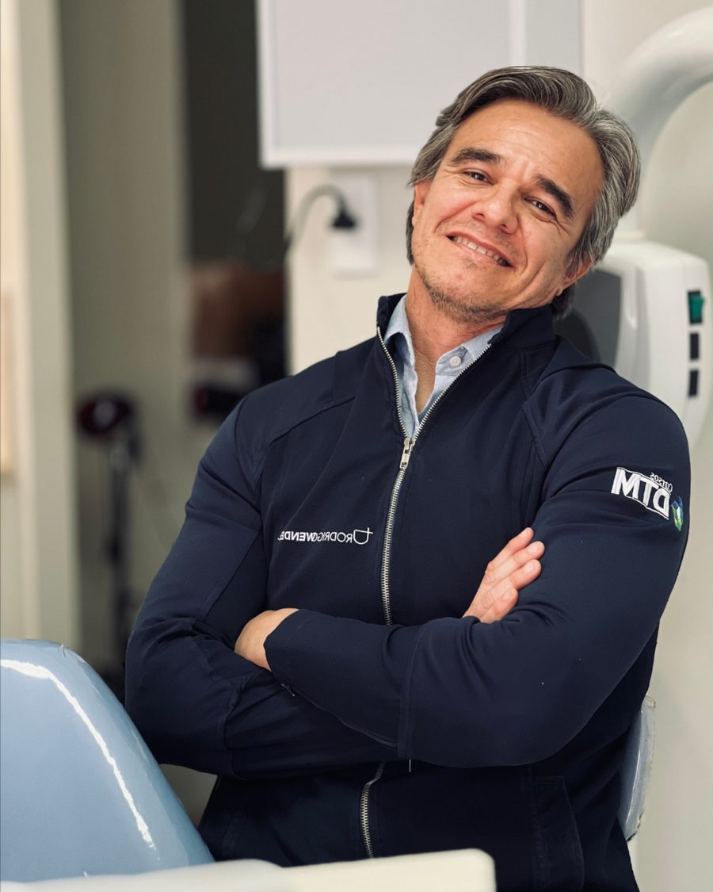
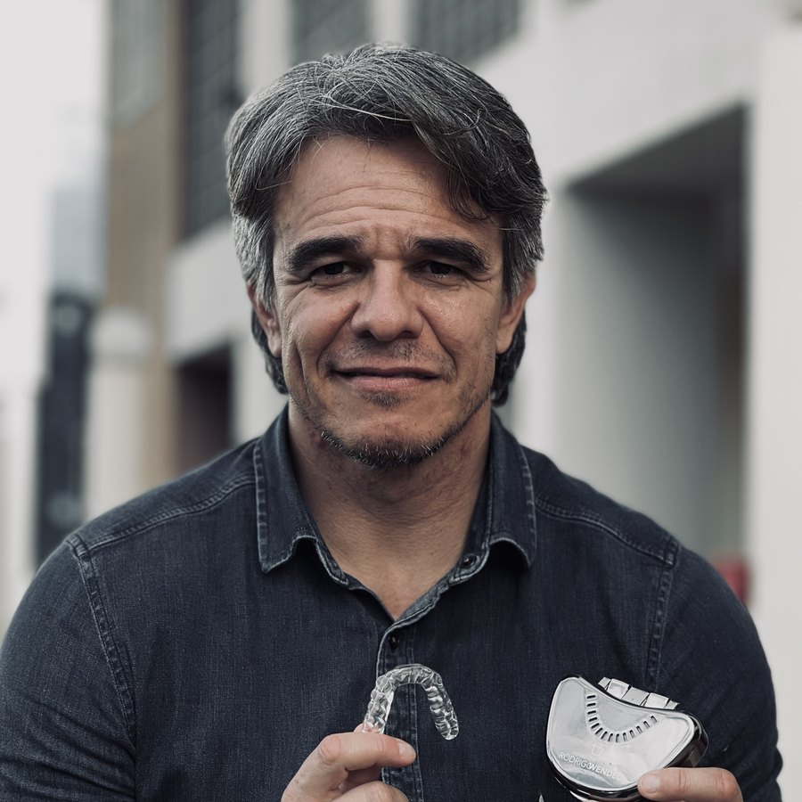

![Formação Viver de DTM]() uma formação da
AcademiaDTM
uma formação da
AcademiaDTM
Já tem um paciente de DTM na sua agenda desta semana
Cerca de 3 em cada 10 adultos têm DTM, e boa parte já passa pela sua cadeira. Tratada como bruxismo, porque a formação de origem nunca ensinou a separar os dois quadros.
Fonte: Valesan et al., 2021, Clinical Oral Investigations
10 meses · 43 encontros ao vivo · 3 imersões presenciais em Brasília
Um percurso de 10 meses, não um curso gravado
43
encontros ao vivo, online
3
imersões presenciais (Brasília)
Viver de DTM é a formação do Dr. Rodrigo Wendel para dentistas que já atendem, mas confundem sinal de bruxismo com sinal de DTM. Encontros semanais ao vivo. Três imersões presenciais na clínica dele, em Brasília. Prática supervisionada em paciente real.
Uma formação da Academia DTM.

DTM é um guarda-chuva. Tem cerca de dez diagnósticos dentro dele
Cada sinal aponta para um caminho diferente. Um quadro muscular. Um quadro articular. Um deslocamento de disco. Três grupos, com critérios, tratamentos e prognósticos distintos entre si.
Sem uma formação que ensine a diferenciar os três, o caminho mais comum é tratar tudo pelo sinal mais conhecido: bruxismo.
Num levantamento com 310 dentistas, cerca de 4 em cada 10 clínicos gerais não se sentiam confiantes para conduzir um caso de DTM. E 61% desconheciam o DC/TMD, o critério diagnóstico internacional.
Fonte: Prabhakar et al., 2024, The Journal of Indian Prosthodontic Society, amostra da Índia
Quem só tem martelo trata tudo como prego
DTM pede o arsenal inteiro.
Existe um padrão na odontologia. Cada especialidade empurra a própria ferramenta para qualquer caso que chegue. O cirurgião quer operar. O ortodontista quer aparelhar. O protesista quer prótese. O clínico geral quer colocar placa.
Esse padrão tem nome: o Martelo Único. É o resultado de uma formação que ensina uma ferramenta de cada vez, nunca o raciocínio completo.
Viver de DTM ensina o raciocínio completo, em três peças, nesta ordem. Cada uma só funciona por causa da anterior.
Protocolo de leitura em camadas
Ficha pré-consulta, anamnese profunda, exame físico protocolar, leitura de imagem. Fecha um diagnóstico específico dentro dos três grupos.
Arsenal terapêutico em degraus
Do conservador ao invasivo. Um degrau por grupo, com critério objetivo de quando subir. Você passa a escolher entre várias ferramentas.
Percurso comercial
A competência clínica vira receita quando você cobra a avaliação como ato clínico e apresenta o diagnóstico já como abertura do plano de tratamento.
A escada terapêutica · peça 02 do raciocínio
Curso gravado
Especialização tradicional
Viver de DTM
É a mesma semana. O mesmo paciente que você trataria como bruxismo senta na sua cadeira.
Você não pede a placa. Você abre a ficha, apalpa o masseter, mede a abertura, pergunta quando o estalo mudou de lado. Antes de ele levantar, você já sabe qual dos três grupos está na frente, e diz o nome do quadro em voz alta.
Ele não sai da sua sala com o telefone de outro profissional. Sai com um plano, e com a próxima consulta marcada com você.
O caso de DTM começa e termina na sua cadeira
Dez meses em três etapas encadeadas, com 43 encontros ao vivo e 3 imersões presenciais obrigatórias.
Cadência semanal, às terças-feiras. Encontros em grupo, online, mais 3 imersões na clínica do Dr. Wendel, em Brasília, somando 8 dias de prática hands-on. Turma fechada: você começa e termina com o mesmo grupo.
Fundação e Diagnóstico
Cerca de 4 meses. Você fecha o diagnóstico dentro dos três grupos, integrando anamnese, exame físico e imagem. Fecha com uma imersão em Brasília, em paciente real.
Tratamento
Cerca de 4 a 5 meses. Você monta planos escalonados e executa, com as próprias mãos, os procedimentos conservadores e o protocolo de infiltração e dry needling, sob supervisão direta.
Comercial, Gestão e Marketing Básico
Cerca de 2 meses. Você conduz a consulta de avaliação como ato clínico e comercial, e controla os números do funil. Fecha com uma simulação completa de consulta, ao vivo, diante da turma.
Início em 23 de fevereiro de 2027 · quatro viagens a Brasília: imersões em maio, outubro e novembro, mais os dois dias de shadowing · formatura em novembro de 2027 · certificado de conclusão com carga horária
Dois perfis muito diferentes cabem nesta turma
Quem já opera, apara ou faz prótese e recebe DTM de rebote. E quem vive de restauração e canal na clínica geral e quer abrir uma frente nova. O critério abaixo é o que decide.
É para você
Paciente com dor na mandíbula senta na sua cadeira quase toda semana, e você precisa encaminhar
Consultório rodando, clínica geral ou outra especialidade, agenda cheia, mas bateu em um teto de faturamento
Disposição para quatro viagens a Brasília em 2027: três imersões e o shadowing
Não é para você
Procura curso 100% gravado, sem prática presencial
Busca o título do CFO em dois anos, ao invés da competência teórico-prática em 10 meses
Acredita que tudo deve ser resolvido com uma única técnica
Dr. Rodrigo Wendel
Direção clínica da Academia DTM. Cerca de 30 anos de prática em DTM e dor orofacial.

Graduação em Odontologia pela UNESP Araçatuba · mestrado pela UNIFESP · fellowship na Universidade de Zurique
Cerca de 10% dos especialistas em DTM do Brasil aprenderam com o Dr. Rodrigo

“No começo da carreira eu já fui conservador demais em alguns casos. Perdi o timing certo de intervir e vi duas pacientes com o mesmo diagnóstico terem desfechos opostos. Uma teve sequela. A outra não.
A diferença entre elas foi que a primeira passou por mim antes de eu ter o arsenal completo. Foi esse tipo de experiência, repetida por quase três décadas, que me levou a organizar o protocolo que vou te ensinar agora.
A régua que aplico com o paciente é a mesma que aplico com quem se forma na Academia DTM: falar o que dá certo e o que não dá.”
Dr. Rodrigo Wendel
Só a turma fundadora entra na clínica dele
Dois dias de shadowing na clínica real do Dr. Wendel — que some a partir da segunda turma.

Currículo completo
43 encontros ao longo de 10 meses. Diagnóstico, tratamento escalonado e comercial básico.
3 imersões presenciais em Brasília
8 dias de prática hands-on, na clínica real do Dr. Wendel, sob supervisão direta.
Shadowing na clínica real
Dois dias de shadowing na clínica real do Dr. Wendel, exclusivo da turma fundadora. O encaixe no calendário de 2027 é combinado com a turma.
Banco de casos clínicos reais comentados
Comentados pelo Dr. Wendel, incluindo o raciocínio de procedimentos que a formação ensina a indicar mesmo sem executar.
Kit de Ativação Imediata
Ficha de anamnese, scripts de recepção e roteiro de devolutiva, liberados antes do primeiro encontro.
DTM Para Todos
Curso introdutório de 9 aulas, liberado assim que efetuar a matrícula.
Grupo no WhatsApp
Comunidade exclusiva para tirar dúvidas e trocar experiências com o professor e os colegas.
Certificado de conclusão
Com carga horária ao final da formação.
O investimento e as condições de pagamento são apresentados na conversa de avaliação de vaga, junto com o restante da proposta.
A turma é fechada. O limite é a supervisão
Quem define o tamanho da turma é a quantidade de mãos que o professor consegue acompanhar de perto, imersão por imersão.
A execução de infiltração anestésica e dry needling em paciente real exige supervisão individual apertada. A disponibilidade de pacientes elegíveis, dentro da janela de cada imersão, é limitada.
Rodar a estação em duplas ou trios reduz a pressão sobre esse teto, mas não o remove. Uma turma maior do que a capacidade real de supervisão significa parte da turma sem executar o que foi prometido. Esta formação não vende essa promessa.
Não existe contagem regressiva. Não existe “últimas vagas” fabricada. A vaga se encerra quando a turma atinge o teto real de supervisão.
8 perguntas que todo dentista se faz antes da matrícula

Minha cidade tem paciente de DTM suficiente para justificar essa formação?
Uma meta-análise com quase 21 mil participantes encontrou DTM em 29,5% da população, e em 36,7% das mulheres. O volume já está na sua agenda atual. Falta o protocolo para reconhecer o caso.
Fonte: Alqutaibi et al., 2025, Journal of Oral & Facial Pain and Headache
Curso online ensina odontologia de verdade?
Esta não é uma formação 100% online. São 3 imersões presenciais obrigatórias, na clínica do Dr. Wendel, em Brasília, com prática hands-on em paciente real.
Qual é o investimento?
O investimento é apresentado na conversa de avaliação de vaga, junto com o restante da proposta. A conversa não compromete a nada.
Já fiz uma pós-graduação e não voltou o investimento. Por que essa seria diferente?
Porque a maioria das pós-graduações entrega só a técnica clínica. Viver de DTM entrega a técnica somada ao percurso comercial completo: cobrar, converter e reter.
Não tenho tempo. Já sou sobrecarregado. Como encaixo isso na rotina?
O formato é um encontro semanal, ao vivo. E o Kit de Ativação Imediata (ficha de anamnese, scripts de recepção e roteiro de devolutiva) chega antes do primeiro encontro, para você aplicar o que aprende dentro da agenda que já tem.
Prefiro presencial, aprender fazendo. Isso aqui é assim?
As 3 imersões existem para isso. Cada uma fecha uma etapa com prática supervisionada e validação ao vivo, em paciente real.
Não quero virar especialista, só parar de encaminhar o paciente que já está na minha cadeira. Serve pra mim?
Sim. Serve tanto a quem quer se tornar referência quanto a quem só quer parar de devolver o caso que já senta na própria cadeira toda semana.
O certificado me dá o título de especialista?
Não. O título de especialista vem de curso de especialização reconhecido pelo CFO. Viver de DTM entrega certificado de conclusão com carga horária, mais a competência teórico-prática para conduzir o caso na própria cadeira, em 10 meses.
O paciente que você trata como bruxismo já está na sua agenda desta semana
Aplicar abre uma conversa sem compromisso. A compra, se acontecer, vem depois.
Viver de DTM é uma conversa, não um botão de compra. Aplicar leva três minutos e abre um processo de três passos, sem custo em nenhum deles até a matrícula.
03
passos entre a aplicação e a matrícula
nenhum deles custa nada
-
01
Você aplica no formulário
-
02
A equipe analisa e agenda um horário com o Dr. Wendel
-
03
Reunião de apresentação da formação e matrícula, se entenderem juntos que é o seu momento
Enquanto essa conversa não acontece, o paciente de DTM continua sentando na sua cadeira, do jeito que sempre sentou. Aplicar é o que muda isso.